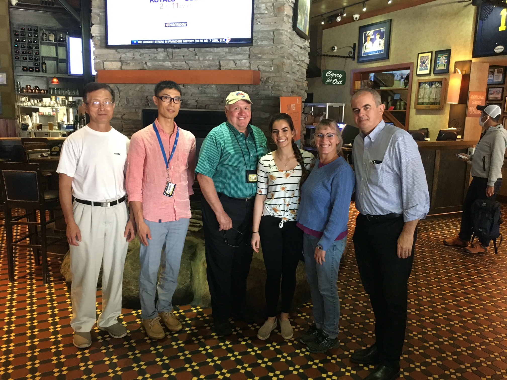
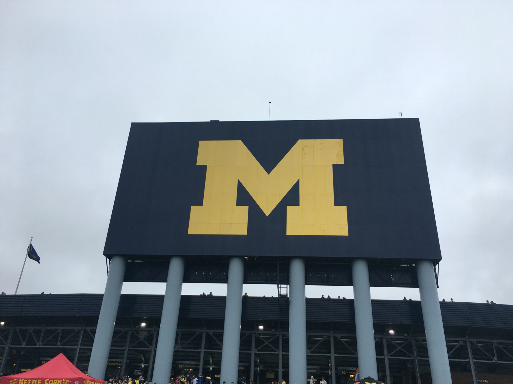

留学体験記
アメリカ・ミシガン大学留学
留学先・ラボ
アメリカ合衆国 ミシガン大学
歯学部 Nor研究室
研究テーマ
腺様嚢胞癌（唾液腺癌）の癌幹細胞を標的とした治療研究（血管新生阻害から癌幹細胞へ）
研究室体制
ブラジル人のボス、アメリカ・中国のスタッフ、ドイツの院生と佐原先生という、非常に国際色豊かで和気あいあいとしたラボです。
国際色豊かな環境での唾液腺癌基礎研究と、家族で過ごした充実の米国生活
浜松医科大学よりミシガン大学へ2019年9月から2021年8月末まで留学していた佐原聡甫といいます。この度、文章を書く機会を頂いたので、留学先の研究室の様子や渡米中楽しんだことなどをご報告させていただきます。ミシガン州はアメリカ中西部、五大湖に面したところにあります。自動車企業が多く、FordやGMの名前は車に詳しい方以外でも聞いたことがあるのではないでしょうか。また、トヨタ自動車をはじめとする自動車関連企業に勤める日本人も多く住んでいます。
留学のきっかけ
皆さんは留学と聞くとどのようにお考えになるでしょうか。私の場合の留学のきっかけは耳鼻咽喉科へ入局したときの峯田教授からの「留学はしたいか？」という一言からはじまりました。私は幼少期に親の仕事のため海外で生活したことがあり、現地に住むことでしか感じられない空気・雰囲気に圧倒されたという鮮明な記憶がありました。そんな素晴らしい体験をもう一度自分自身で体験したい、さらには子どもにも同じように体験してもらいたいという気持ちを強く持っていました。臨床留学は非常にハードルが高いため、留学するなら基礎研究かなとなんとなく考えていたところ、今回の留学に至りました。
ミシガン大学での研究と温かいラボメンバー
ミシガン大学歯学部はアメリカ国内でNo.1と言われており、その中のNor研究室へ唾液腺癌の基礎研究のため留学しました。ラボはブラジル人のボス（Dr. Nor）と、アメリカ人、中国人のスタッフ（Kristy and Zhang）、ドイツ人のPhD学生（Alex）で構成されており、アメリカにいるのにアメリカ人は一人しかいないという、非常に国際色豊かなラボです。
そのラボで、唾液腺癌の一つである腺様嚢胞癌の癌幹細胞を標的とした治療研究を行っていました。過去にも浜松医科大学耳鼻咽喉科から複数人の留学者がおり、当初は血管新生阻害をターゲットとしていましたが、現在はがん幹細胞の研究をメインテーマとして取り組んでいます。
毎週金曜日の朝は、ベーグルなどのおやつを持ち込んでのラボミーティングを行い、和気あいあいとラボメンバーと話す機会がありました。また、2週間に1度の火曜日は、個人ごとの研究の進捗具合をボスと相談する個人面談の機会があり、研究初心者で留学しましたが、その都度、方針や結果の解釈を相談できたので非常に助かりました。他のラボの話を聞くとボスと話す機会がほとんどないラボもあるようで、その点、忙しい中時間を作り、しっかりとした面談時間を設けるなどラボのメンバーを大切にしてくれているDr. Norの人柄が出ているのかと思います。今回の留学では、Covid-19パンデミックによるラボの3ヶ月間の完全閉鎖や、その後のラボの引っ越しなど、普通では体験できない出来事もありました。
治安が良く子育てに最適なアナーバーでの生活
留学中の生活環境は、今後留学を考えておられる先生方は気になると思われます。留学先のミシガン州アナーバー市は非常に犯罪率が低く、よくジョーク交じりで「発砲事件があるだけでニュースになるほど平和な街」と言われていました（シカゴなどの大都市ではその程度ではニュースにならないそうです）。実際に2年間で発砲ニュースが流れたのは3回だけでした。
住居は幸いにも大学寮を借りることができ、周囲には同年代の子どもが多く、ドアを開けたらすぐに公園が広がっているような、子育てにはこれ以上ない素晴らしい環境でした。妻も「もう一度アナーバーで生活をしたい」と言うほどこの街を気に入っており、良い研究室があれば、今後留学先を考えているファミリー層の先生方にも自信を持っておすすめできる留学先です。
「Covid-19パンデミックの影響により、もともと計画していた旅行などには行けなくなってしまったのですが、帰国直前にいろいろ規制が緩んだので、いくつか旅行に行ってきました。ボストンの知人を訪ねたり、ミシガン州立公園の有名な観光地マキナック島、そしてラスベガスでキャンピングカーをレンタルしてグランドキャニオン国立公園を回るなど、アメリカ国内旅行も心ゆくまで楽しむことができました。」
後進の先生方へ
今回の留学は基礎研究も初めてのことでしたが、温かい仲間に恵まれて楽しく進められたと思いますし、異国の生活もいろいろなトラブルを乗り越えながら家族とともに大いに楽しむことができました。もし、今後留学を迷っている先生がいらっしゃいましたら、迷わず行くことを強くおすすめいたします。
このような貴重な機会をいただいた浜松医科大学耳鼻咽喉科・頭頸部外科の先生方には心より深く感謝申し上げます。またこの留学記が、後進の先生方の将来のキャリアを考える上での一助となれば幸いです。
他の留学体験記を読む
スウェーデン・ルンド大学へ留学し、HPV陽性中咽頭癌細胞株を用いた基礎研究に取り組まれた杉山夏樹先生の体験記です。
ミシガンでの生活と研究風景
写真をクリックすると拡大表示します。

写真①：世界最大級のアメフトスタジアム

写真②：国際色豊かなラボメンバーとボスのDr. Nor

写真③：子育てに最適な自然豊かな大学寮